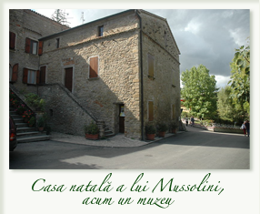
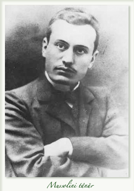
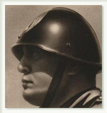

Personalitatea părintelui fascismului se detaşează de tiparul construit fie de adulatorii, fie de detractorii lui, care-i falsificau trăsăturile reale. Între hiperbole care proslăveau geniul „supraomului“ şi denigrările care vedeau numai un „Cezar de carnaval“ se desenează un portret mai echilibrat, cu amestecul său firesc de forţă şi slăbiciune, de consecvenţă şi de contradicţii.
Mussolini s-a născut într-o duminică, pe 25 iulie 1883, la Varano dei Costa, mic grup de case vechi, pe un deal de la Dovia, cătun al comunei Predappio, în Romagna. Pozând mai târziu pentru posteritate, dictatorul se va prezenta, cu satisfacţie, ca un fiu al poporului, un proletar care s-a ridicat din nimic. De fapt, cu toate că avea strămoşi ţărani, părinţii lui făceau parte dintr-o categorie socială mai înstărită, aflată la limita de jos a burgheziei rurale.
Tatăl lui, Alessandro, era un orator socialist bine cunoscut, de meserie fierar. El i-a dat primului copil pe care l-a avut prenumele Benito, în semn de omagiu pentru revoluţionarul mexican Juarez.
Benito a fost elev capabil, dar turbulent, la Colegiul salesienilor de la Faenza, apoi la colegiul şi la Şcoala normală din Forlimpopoli, unde a terminat studiile, luându-şi, la optsprezece ani, diploma de institutor. Din 1900 el era înscris în Partidul Socialist.
În 1902, a decis să nu facă serviciul militar şi s-a refugiat în Elveţia unde a trăit până în 1903, aproape fără întrerupere, la Berna, la Tricino, la Lausanne şi la Geneva, practicând diverse meserii: zidar, vânzător de prăvalie, propagandist şi organizator sindical pentru muncitorii italieni aflaţi în ţara vecină. Cunoaşte o serie de militanţi marxişti şi anarhişti şi acumulează într-o manieră autodidactă un bagaj disparat de cunoştinţe.
El se va întoarce în Italia şi va face serviciul militar timp de doi ani. În 1909 era stabilit în Forli, unde timp de trei ani face cu înverşunare propaganda socialistă şi antimilitaristă, motiv pentru care a stat câtva timp în închisoare, datorită războiului din Libia. El publica, în ziarele locale, articole incendiare şi violent anticlericale. Treptat, numele lui ajunge cunoscut dincolo de provincia Romagna şi, la sfârşitul anului 1912, liderii socialişti îl cheamă la Milano să conducă ziarul partidului, Avanti.
Cu ocazia dezbaterilor privind intervenţia în război, este mai întâi violent antimilitarist şi ostil conflictului. Apoi, în noiembrie 1914, adoptă o poziţie radical diferită. Însetat de acţiune, obţine de la Aliaţi şi de la industriaşii favorabili intervenţiei, fondurile care îi permit crearea ziarului Popolo d’Italia. În paginile acestuia îşi desfăşoară talentul de polemist cu stil percutant şi îşi risipeşte, în favoarea intrării în război, elocvenţa care captează mulţimile. Mobilizat, petrece un an pe front, apoi, fiind rănit în timpul unui exerciţiu, revine la conducerea ziarului. Oarecum uitat la sfârşitul războiului, se hotărăşte să-şi depăşească ideile socialiste de altădată în favoarea unei suprasolicitări demagogice, exploatând excesiv temele naţionaliste.
Caracterul lui Mussolini era o sumă de contradicţii, alcătuind o personalitate complexă. Dacă fascismul s-a caracterizat printr-o evoluţie continuă şi adaptarea la circumstanţele schimbătoare, multe trăsături permanente s-au menţinut în comportamentul Ducelui, cu rădăcini în anii obscuri ai începuturilor. Mai întâi erau setea de acţiune, gustul pentru violenţă şi ambiţia de a parveni. Mussolini era un extravertit, îi plăcea să impresioneze şi să-şi compună personajul.
Agitatorul socialist şoca prin focul arzător din privire şi prin modul neliniştit de a gesticula; Ducele, cu trupul rotunjit îmbrăcat în uniformă, va păstra aceeaşi mască, când trufaşă, când provocatoare.
Capabil totuşi de oarecare omenie, acest apologet al violenţei avea oroare de vărsarea de sânge. Sub acest aspect, va fi o dictatură mult mai puţin barbară decât hitlerismul. Ducele inspira mulţimii o uimitoare atracţie. Mussolini era, înainte de toate, un ziarist foarte dotat, abil în polemici, cu un limbaj colorat şi un excelent orator, care folosea exprimarea scurtă, dar izbitoare şi imaginile pitoreşti.
Hagiografii lui au preamărit talentele multiple pe care le-ar fi avut, cultura enciclopedică şi dotarea de poliglot. În realitate sentimentul estetic îi era limitat. Formaţia lui intelectuală se baza pe informaţii strânse în grabă, superficiale, fructe ale lecturii nesistematice.
Continuare: II. Ascensiunea fascismului